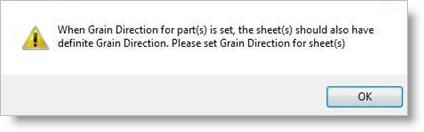

This tab allows the selection of Part(s) to be nested. There are 3 buttons on this tab that provide control for the selection of geometry as parts.
1.Nesting maintains the original Layer, Grouping and Color properties of curves when parts are nested. This means that if curves are grouped, they will stay grouped and maintain their original layer and color after being nested. 2.Holes may be located partially inside the part. This situation can occur in cabinet work when grooves sometimes extend past the part boundary. 3.IMPORTANT: If you plan to nest 2D curves, make sure the Sheet Thickness defined on the Select Sheets tab is set to 0 for all sheets. If the Sheet Thickness is greater than 0 and you are nesting curves, you will receive an error message to check your nest setting and try again. |
Each selected shape will be shown in the Browser Parts List as either: 1.a Part periphery shown as Part x 2.an internal cutout shown as Hole x Part parameters (Count, Priority, Orientation and Grain Direction) only apply to the periphery Part shapes.  to Nest") Select Part(s) to Nest Thickness Filter Each sheet can be assigned a thickness. You can use the Thickness Filter to list only the parts on the sheets of the selected thickness. Select Part(s) This button will prompt you to select the parts to nest. Remove All Select this button first, then pick the curves on the screen that represent the Part shapes to be nested. Remove Active This button removes all selected Parts from the Parts List in the Nesting Browser. |
Initially the Parts List shows all Parts and their subordinate Holes. Collapse Up: Expand down: |
Click the Select Part(s) button to select curves to be used as Part(s). You may window-select closed 2D curves or 3D poly-surface solids or meshes for parts and press enter or click the right mouse button to add curves to the selection list. Selecting open profiles is not supported as this may result in incorrect nests. Parts to be nested may contain cutouts within their periphery. Both periphery curves and cutout curves should be selected as parts for the nesting process. See Things to Consider when Selecting Part Curves above.
|
Count defines the desired quantity for each part to be nested. The default value is set = 1.  Count for Parts In the above example, Count for Part1 = 78, Part2 = 80, etc.
Make all the same You can right-click on any part count and select Make all the same to automatically adjust all of the parts in the nest to the same count as that part.  Make Part Count All the Same |
You can set a priority level for each part in the nest. Higher priority parts will be nested first, beginning with sheet 1. This part is set as Priority #1 Now this part is set as Priority #1 |
Selecting Fixed does not permit rotation of parts when nested in the sheet. Fixed does not permit rotation of parts when nested in the sheet When using Fixed orientation, Grain Direction cannot be set for parts. In this example, Orientation has been set = 45 to allow the parts to be rotated. Orientation has been set = 45 to allow the parts to be rotated Selecting Fixed does not permit rotation of parts when nested in the sheet. Fixed does not permit rotation of parts when nested in the sheet When using Fixed orientation, Grain Direction cannot be set for parts. |
Refer to Grain Direction for Sheets. If Grain Direction has been specified for sheets, then it can be specified for any parts that require this control during nesting. Parts that have a Grain Direction specified will be aligned with the Grain Direction of the sheets. Grain Direction can be set to None, Along X or Along Y. Grain Direction for Parts
 |
This provides control to set the following parameters:
|